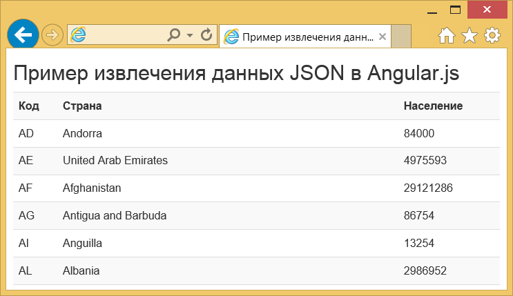

Извлечение данных JSON в AngularJS
Что такое JSON?
JSON это лёгкий формат для обмена данными. Простой для людей, чтобы его читать и писать. Простой для машин для разбора и генерации. JSON — это текстовый формат, который полностью зависит от языка, но использует соглашения, которые знакомы программистам.
JSON построен на двух структурах:
- Коллекция пар имя/значение. В различных языках это реализовано как объект, запись, структура, словарь, хэш-таблица, список ключей или ассоциативный массив.
- Упорядоченный список значений. В большинстве языков это реализовано как массив, вектор, список или последовательность.
Идея примера
В этом примере мы покажем простой способ извлечения данных из файла JSON и отображение соответствующей информации в нашем Angular-приложении, в удобном для пользователя виде. Конкретно, мы будем иметь дело с населением стран по всему миру.
Файл JSON
Я уже подготовил JSON-файл со странами, в котором хранятся кодовые имена и данные о населении нескольких стран.
Само приложение
Итак, какой план?
- Извлекаете JSON.
- Отображаете JSON удобочитаемым способом.
Извлечение JSON означает, что это должно быть сделано каждый раз, когда приложение загружается в браузер. А именно, соответствующее действие происходит в скрипте внутри <head>.
Хорошо, что было проще, как насчёт одной сложности? Упоминаемое ранее «действие» на самом деле — это обращение к сервису $http, базовому сервису Angular, который облегчает общение с удалёнными HTTP-серверами через объект браузера XMLHttpRequest или через JSONP.
На практике это означает, что вам требуется развернуть приложение на веб-сервере, а не выполнить его в браузере. Для получения более подробной информации об этом факте, пожалуйста, обратитесь к этому посту.
В целом использование сервиса $http — это единственный аргумент (объект с настройками), который применяется для генерации запроса HTTP. Он возвращает обещание (promise) с двумя методами $http: success и error.
Вот как выглядит простой запрос GET:
// Пример простого запроса GET:
$http.get('/someUrl').
success(function(data, status, headers, config) {
// Этот обратный вызов будет вызываться асинхронно,
// когда получен ответ
}).
error(function(data, status, headers, config) {
// Вызывается асинхронно, если происходит ошибка
// или сервер возвращает ответ со статусом ошибки
});Мы только используем success и угадайте что?! После успешного вызова/выполнения сервиса мы хотим загрузить наш JSON-файл в глобальную переменную, доступную всем приложениям, и да, ваше предположение было верно, $scope является глобальной переменной, которую мы ищем!
Кроме того, базовый сервис $http предлагает сокращённые методы, где обязательным является только URL, который должен быть обработан, в то время как данные запроса должны быть переданы для запросов POST/PUT:
$http.get('/someUrl').success(successCallback);Пример
Время для действий!
Загрузка JSON в $scope
В соответствии с упомянутыми выше замечаниями мы должны загрузить наш JSON-файл в переменную $scope, скажем countries:
$http.get('countries.json').success(function(data) {
$scope.countries = data;
});Очевидно, что этот вызов сервиса должен быть частью определения контроллера приложения Angular, поэтому предполагая, что мы назвали наше приложение countryApp, вот обновлённый формат вызова сервиса:
countryApp.controller('CountryCtrl', function ($scope, $http) {
$http.get('countries.json').success(function(data) {
$scope.countries = data;
});
});Если вам нужна дополнительная помощь по контроллеру, пожалуйста, взгляните на этот раздел.
Отображение данных JSON в таблице
Теперь, когда мы загрузили все данные JSON в $scope.countries давайте покажем их в таблице с тремя колонками: код, название, население. Это обстоятельство переводится в два требования:
- Мы должны найти способ повторно анализировать все данные из переменной $scope (поскольку мы, очевидно, не хотим, руками вводить более 70 отдельных стран).
- Мы хотим разделить данные каждой страны на её код, название и население, чтобы отображать их в соответствующей колонке таблицы.
Определить заголовок таблицы очень просто:
<th>Код</th >
<th>Страна</th >
<th>Население</th >
</tr >Теперь, чтобы полностью выполнить первое требование, мы будем использовать директиву ngRepeat, которая создаёт экземпляр шаблона за раз из коллекции. Каждый экземпляр шаблона получает собственную область видимости, где переменная цикла установлена на текущее положение элемента, а $index устанавливается на индекс или ключ элемента.
В нашем случае, для многократного цикла по каждой стране, мы должны предположить, что каждая страна является строкой таблицы:
<tr ng-repeat="country in countries">Полное выполнение второго требования теперь легче, потому что страна обрабатывается каждый раз, когда можно получить данные из переменной country:
<tr ng-repeat="country in countries | orderBy: 'code' ">
<td>{{country.code}}</td>
<td>{{country.name}}</td>
<td>{{country.population}}</td>
</tr>Вот окончательная структура нашего приложения:
index.html
<!DOCTYPE html>
<html ng-app="countryApp">
<head>
<meta charset="utf-8">
<title>Пример извлечения данных JSON в Angular.js</title>
<link rel="stylesheet" href="https://maxcdn.bootstrapcdn.com/bootstrap/3.3.5/css/bootstrap.min.css">
<script src="https://ajax.googleapis.com/ajax/libs/angularjs/1.4.7/angular.min.js"></script>
<script>
var countryApp = angular.module('countryApp', []);
countryApp.controller('CountryCtrl', function ($scope, $http){
$http.get('countries.json').success(function(data) {
$scope.countries = data;
});
});
</script>
</head>
<body ng-controller="CountryCtrl">
<h2>Пример извлечения данных JSON в Angular.js</h2>
<table class="table table-striped">
<tr>
<th>Код</th>
<th>Страна</th>
<th>Население</th>
</tr>
<tr ng-repeat="country in countries | orderBy: 'code' ">
<td>{{country.code}}</td>
<td>{{country.name}}</td>
<td>{{country.population}}</td>
</tr>
</table>
</body>
</html>Демонстрация
Давайте запустим приложение на локальном сервере.

Рис. 5.1. Скриншот приложения
Скачать
Вы можете скачать полный исходный код этого примера здесь: angularjs_json.zip.

Все материалы сайта доступны по лицензии Creative Commons «Attribution-NonCommercial» («Атрибуция — Некоммерческое использование») 4.0 Всемирная, если не указано иное.